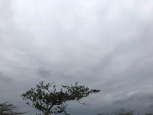
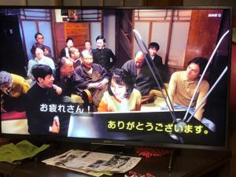
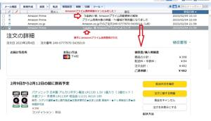

うるがいの話 ある日
最新: Amazonプライム無料体験【うるがいの話 ある日】とは 一日だけのプログです
『うるがいの話』の最新一日だけのプログで、通信料が少なく経済的だ。カニの画像をクリックすると全ての日付が載る『うるがいの話』サイトを表示します
|
|
【うるがいの話】 うるがい(ｳﾙｶﾞｲ urugai)とは、『もずくがに』の名前でとても大きくなります。 |
|---|---|
|
|
【カミマヤーの話】 猫のことを方言でマヤーといいます。カミマヤー（kamimayaa）とは、神の猫のことです。 |
|
【たながぁの音楽】 たながぁ（ﾀﾅｶﾞｰ tanagaa）とは手長えびのことで、何種類かあり大きいのは車 エビぐらいになります。 |

|
【ぶながぁの話】 ぶながぁ(ﾌﾞﾅｶﾞｰ bunagaa)とは、赤い髪の毛、赤い身体、そして身長は１ｍ２０ｃｍ ぐらい、川の蟹を食べているの目撃された。場所は沖縄県国頭郡大宜味村のと ある村僕の隣近所に住んでいる爺さんから、聞いた話です。 |
|
|
【ギーマの話】 ギーマ(giima)とは、山原の里山に咲くスズランに似た、 花を付けます。実は食べられます、 気が付くと口の周りが紫になっています。 |
2023年02月05日 (日）Amazonプライム無料体験
16:45
 
ヨメのお気に入りの電卓の電池が切れたので、なんとかしてとミッションを受
けた。ドライバで電池の蓋を外すと、銅で青錆が・・・、かなり古い。見たこ
ともないボタン電池だった。この電卓の電池は替えたことが無いらしい、仕方
ないアマゾンで注文することにした。おおお、ところがである注文を確定しよ
うとしたら、Ａｍａｚｏｎプライム無料体験が登録されましたとガイダンスが
出る、そんな操作をしたことが無いのに！、と注文をやり直し眠る。朝メール
を確認すると遅かった。ネットで調べキャンセルの手続きをとる。困ったもん
だ、詐欺メールではなく大御所のアマゾンの詐欺ではないか。
ようこそじゃねえ！！またしても勝手にamazonプライム会員にされた 
あー、２枚目の写真は、ＮＨＫ『大河ドラマが生まれた日』で皆がテレビの前で
集まるシーンだが、昔の実家でもテレビの無い近所の人達が同じように集まって
いた。
１６時１９分 ビットコインの総資産 ￥８、８８７（↑２０）